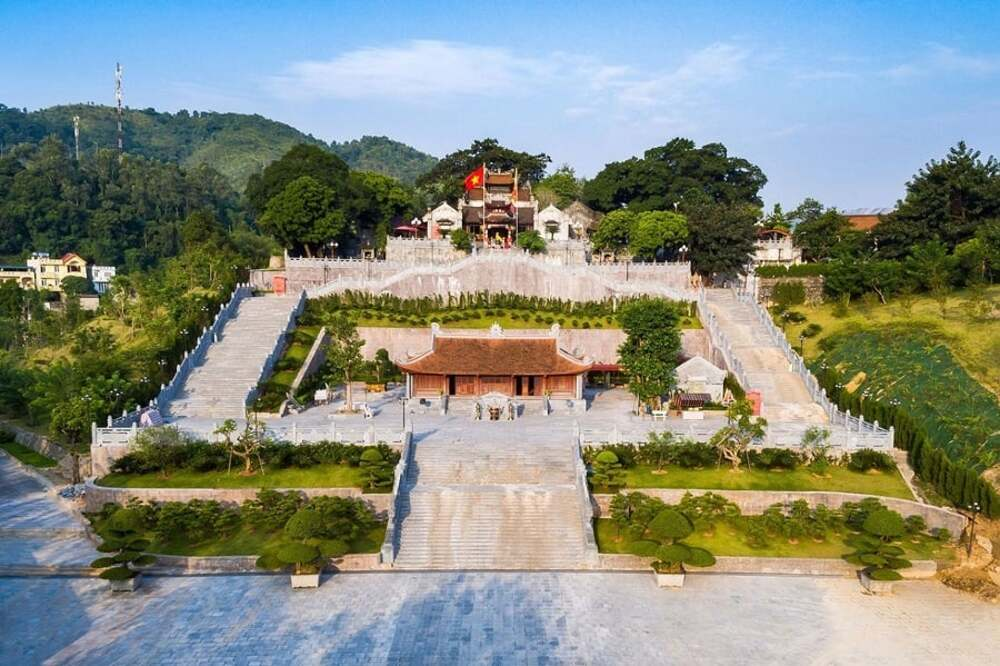

Di tích Đền Cửa Ông
Cửa Ông là vùng đất địa linh nhân kiệt. Từ xa xưa, nơi đây giữ vị trí đặc biệt quan trọng khi con đường bộ đi qua Cửa Ông là tuyến giao thông độc đạo nối vùng Đông Bắc với các khu vực lân cận. Cửa Ông được ví như “yết hầu” nối liền miền Đông chập chùng đồi núi với vùng mỏ giàu có và miền Tây rộng lớn của tỉnh.
Trong thời kỳ phong kiến, để kiểm soát tàu thuyền ngoại quốc qua lại trên tuyến đường thủy Đông Kênh, triều đình đã lập các trạm đội hải quan dọc bờ biển, gọi là Đồn Suất Ti Tuần. Cửa biển đặt đồn này được gọi là Cửa Suất, về sau đọc chệch thành Cửa Suốt. Trong cuộc kháng chiến chống quân Nguyên – Mông, Hưng Nhượng Vương Trần Quốc Tảng được giao trấn giữ cửa biển phía Đông, giữ vai trò then chốt trong bảo vệ vùng biên hải. Sau khi ông qua đời, Nhân dân lập đền thờ và tôn vinh ông là Đức Ông Đông Hải Đại Vương. Ngôi đền có tên chữ là Đông Hải Linh Từ. Từ đó, Cửa Suốt – nơi có đền thờ Đức Ông – được gọi là Cửa Ông, và ngôi đền thờ Đức Ông được Nhân dân gọi là Đền Cửa Ông là vì vậy.
Di tích đền Cửa Ông nằm trên dãy núi Cẩm Sơn, trên một địa thế phong thủy đắc địa, mặt hướng hải, tả thanh long, hữu bạch hổ, phía sau tựa núi tạo thành thế vững chắc cho cả công trình. Toàn bộ di tích đền Cửa Ông gồm 3 khu vực thờ tự: Đền Hạ, đền Trung và đền Thượng. Ta có thể hình dung tổng thể toàn bộ di tích đền Cửa Ông như sau:
Từ quốc lộ 18A, phía bên trái là Công ty Kho vận và cảng Cẩm Phả, phía bên phải là Cảng than Cửa Ông và phân xưởng Vận tải thuộc Công ty Tuyển than Cửa Ông – TKV, ta đi qua một đường tàu vào một con đường trải nhựa bên tay trái là nhà bia ghi danh các anh hùng liệt sĩ phường Cửa Ông. Đi tiếp khoảng 300m ta đến đền Cửa Ông, đầu tiên là Nghi môn uy nghi được xây mới theo kiểu tứ trụ truyền thống rộng khoảng 12 m.
Đi qua Nghi môn vào trong một khoảng sân rộng được lát đá. Bên tay phải là khu vực nhà vệ sinh cho khách du lịch, bên tay trái là khu vực đền Hạ. Đi qua khoảng sân rộng lên cao lưng chừng là khu vực đền Trung, phía sau đền Trung trên vị trí cao nhất là đền Thượng. Hai bên đền Trung và đền Thượng là hai quả đồi cao tạo thế tả thanh long, hữu bạch hổ, trên các đỉnh đồi được trồng cây xanh, thảm cỏ trang trí.
Trên đỉnh đồi bên phải là nơi đặt tượng Hưng Nhượng Vương Trần Quốc Tảng. Toàn bộ sân, bậc cấp và lan can lên xuống từ đền Hạ đến đền Trung và đền Thượng đều được làm bằng đá xanh, tạo sự thống nhất, hài hòa, bề thế cho cả khu vực di tích.
Cua Ong Historical Site
Cua Ong is a land of extraordinary people and sacred spirits. Since ancient times, this place has held a particularly important position as the land route passing through Cua Ong was the sole thoroughfare connecting the Northeast region with neighboring areas. Cua Ong is often compared to a "strategic gateway" linking the rugged mountains of the East with the rich mining districts and the vast Western region of the province.
During the feudal period, to control foreign vessels passing through the Dong Kenh waterway, the imperial court established customs outposts along the coast called Don Suat Ti Tuan. The estuary where this post was located was named Cua Suat, which later evolved into Cua Suot. During the resistance against the Mongol invaders, Hung Nhuong Vuong Tran Quoc Tang was assigned to guard this Eastern sea mouth, playing a pivotal role in protecting the coastal border. After his passing, the local people built a temple and honored him as Duc Ong Dong Hai Dai Vuong (The Great Lord of the East Sea). The temple's formal name is Dong Hai Linh Tu. Since then, Cua Suot - home to the Lord's temple - became known as Cua Ong, which is why the temple is called Cua Ong Temple today.
The Cua Ong Temple relic is situated on the Cam Son mountain range, occupying a prime feng shui location: facing the sea, flanked by the "Green Dragon" on the left and the "White Tiger" on the right, with the mountains behind providing a solid foundation for the entire complex. The entire relic consists of three main worship areas: the Lower Temple (Den Ha), the Middle Temple (Den Trung), and the Upper Temple (Den Thuong).
From Highway 18A, with the Cam Pha Port and Logistics Company on the left and the Cua Ong Coal Port on the right, you cross a railway line onto a paved road. On the left is the stele house honoring the fallen heroes and martyrs of Cua Ong Ward. Continuing for about 300 meters, you arrive at Cua Ong Temple, starting with the majestic Nghi Mon (Main Gate), newly built in the traditional four-pillar style with a width of approximately 12 meters.
Passing through the gate, you enter a large stone-paved courtyard. To the right are the restroom facilities for tourists, and to the left is the Lower Temple area. Moving across the courtyard and up the hillside, you reach the Middle Temple; situated behind and at the highest point is the Upper Temple. Flanking the Middle and Upper Temples are two high hills representing the Green Dragon and White Tiger positions, with their summits adorned with lush trees and decorative grass.
On the hilltop to the right stands the statue of Hung Nhuong Vuong Tran Quoc Tang. The entire courtyard, steps, and railings leading from the Lower Temple to the Middle and Upper Temples are crafted from blue stone, creating a sense of unity, harmony, and grandeur for the entire relic site.